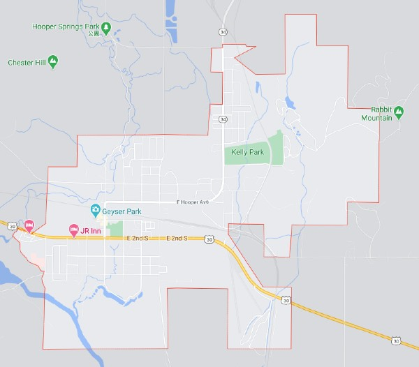

Weather Check
Soda Springs
Weather Summary
Currently:
High: °F
Wind Chilli: °F
Humidity: %
Wind Speed: mph
5 Day Forecast

n/a
n/a
n/a
n/a
n/a
History of Soda Springs
The Oregon Trail passed through Soda Springs. At the time it was known as the "Oasis of Soda Springs". Between Fort Laramie and Fort Boise, Soda Springs was a major landmark and is the second oldest settlement in Idaho.[1] Sulphur Springs was the first hot spring that the Oregon Trail immigrants encountered in the soda springs area. Pyramid springs was discovered by fur trappers and pioneers, they discovered the springs by noticing mounds of soda formed rock and clay. Johnkirk Townsends said in his diary, “Our encampment on the 8th was near what are called the’White Clay pits,” still on Bear River. The soil is soft chalk, white and tenacious: and in the vicinity are several springs of strong super carbonated water which bubble up with all the activity of artificial fountains. The taste was very agreeable and refreshing, resembling Saratoga water but not so saline. The whole plain to the hills is having depressions on their summits from which once issued streams of water. The extent of these eruptions, at some former period, must have been very great. At about half a mile distant, is an eruptive thermal spring of the temperature of 90 [degrees], and near this is an opening in the earth front which a stream of gas issues without water.”
Contact Information
place E 1st St S, Soda Springs, ID 83276
local_phone (684) 887-2428
local_post_office kopo@oguku.bo